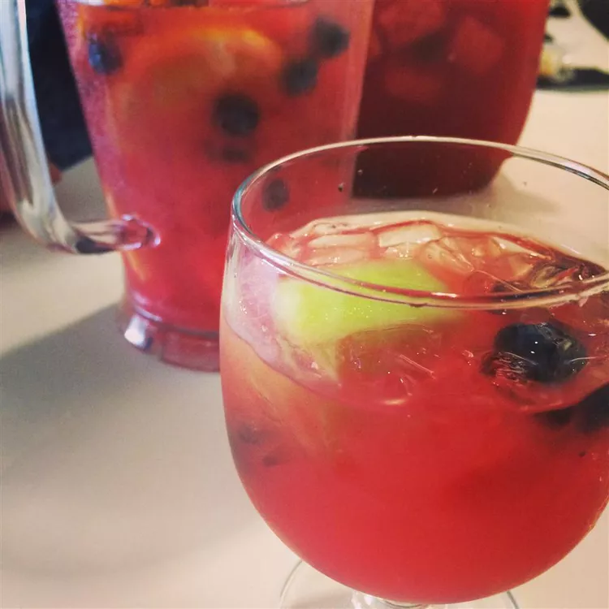

Watermelon Sangria

Watermelon Sangria is a great summer drink!
This tasty recipe is perfect for any gathering on a hot summer day. It's quick, easy, and guaranteed to be a success at your next party!
Ingredients
- 12 cups cubed watermelon, divided
- 1 (750 milliliter) bottle dry white wine
- 1 cup vodka
- 1/2 cup triple sec
- 1 orange, cut into wedges
- 1 cup fresh blueberries
- 1 medium lime, quartered
Directions
- Place 9 cups of watermelon cubes in a blender; blend on high until very smooth. Strain juice through a mesh strainer into a large pitcher.
- Pour wine, vodka, triple sec, and simple syrup into the pitcher; stir to combine. Add remaining 3 cups of watermelon cubes, orange sections, blueberries, and lime quarters; chill sangria for 4 hours before serving.